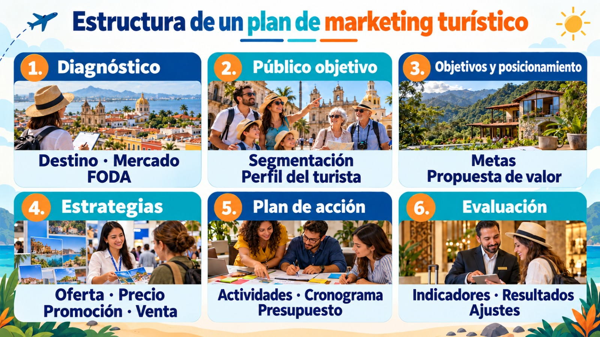
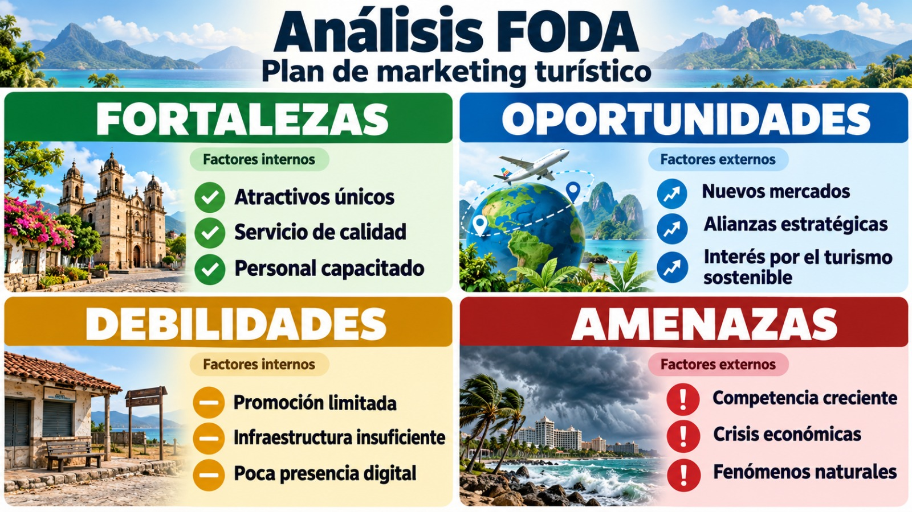

Unidad I · Tema 1.1
Fundamentos del Plan de Marketing
Es una herramienta viva que orienta los recursos, define prioridades y permite evaluar resultados en un sector donde el producto es una experiencia vivencial.
1.1.1¿Qué es un plan de marketing?
Documento escrito que organiza acciones y decisiones en una empresa donde se busca cumplir los objetivos trazados durante un tiempo determinado. No es un ejercicio académico ni un trámite burocrático. Es una herramienta viva que orienta el uso de recursos, define prioridades y permite evaluar resultados.
En turismo, el plan de marketing adquiere una dimensión especial porque el producto es una experiencia. No vendemos un objeto que el cliente se lleva a casa. Vendemos un conjunto de momentos, sensaciones y recuerdos que ocurren en un lugar y un tiempo específicos. Esto significa que no podemos almacenar, no podemos posponer la venta, no podemos recuperar una noche vacía. El plan de marketing turístico debe ser, por lo tanto, más ágil, más sensible al entorno y más centrado en las personas que en los productos.

La infografía resume en seis etapas el recorrido de un plan de marketing turístico: de entender dónde estamos a comprobar si llegamos a donde queríamos.
Estas seis etapas agrupan los diez apartados que se detallan en el subtema 1.1.3: el diagnóstico reúne el análisis de la situación y el FODA; las estrategias corresponden a la mezcla de las 7P, y la evaluación al control y seguimiento con KPIs.
1.1.2¿Por qué es importante planear el marketing en turismo?
Podríamos enumerar muchas razones, pero destacan cinco razones esenciales que todo profesional del turismo debe dominar:
- Primera: porque los recursos son limitados. Ninguna empresa turística, ni siquiera una gran cadena hotelera, tiene dinero infinito para promocionarse. El plan nos ayuda a decidir dónde invertir, con quién aliarnos, qué mensajes lanzar y a quién dirigirlos.
- Segunda: porque la competencia es feroz. Un destino turístico no compite solo con destinos similares. Compite con todos los destinos del mundo que aspiran al mismo tiempo libre y al mismo bolsillo del viajero. El plan nos ayuda a diferenciarnos.
- Tercera: porque la demanda cambia. Los gustos, las modas, las tecnologías, las preocupaciones ambientales y las condiciones económicas cambian constantemente. El plan nos obliga a monitorear y adaptarnos.
- Cuarta: porque la estacionalidad nos golpea. La mayoría de los destinos turísticos tienen temporadas altas y bajas. El plan nos permite diseñar estrategias para suavizar esos valles y aprovechar mejor los picos.
- Quinta: porque la experiencia se construye con muchos actores. En turismo, el visitante no interactúa con una sola empresa. Interactúa con el transporte, el hotel, el restaurante, el guía, la tienda de artesanías, el taxista. El plan de marketing debe coordinar esa experiencia completa, aunque no todos los actores sean parte de la misma empresa.
1.1.3Estructura detallada de un plan de marketing turístico
Se describen los elementos que componen un plan de marketing con ejemplos aplicados directamente al turismo:
I. Resumen ejecutivo
Es la primera página que lee un director general, un inversionista o un funcionario de turismo. Debe contener, en dos o tres páginas, lo esencial: cuál es la situación, cuál es la oportunidad, qué vamos a hacer, cuánto costará y qué resultados esperamos. En turismo, el resumen ejecutivo debe incluir el nombre del destino o empresa, el segmento al que se dirige, la temporada que cubre y el monto de inversión.
II. Análisis de la situación
Aquí respondemos a la pregunta: ¿dónde estamos? Este análisis contempla cuatro grandes dimensiones:
- Análisis externo: todo lo que no controlamos. Incluye el entorno político (estabilidad, regulaciones migratorias), económico (tipo de cambio, inflación, poder adquisitivo), social (cambios en hábitos de viaje, envejecimiento poblacional, conciencia ecológica), tecnológico (plataformas digitales, inteligencia artificial, realidad virtual), ambiental (cambio climático, desastres naturales) y legal (leyes de turismo, normativas de protección al consumidor).
- Análisis interno: todo lo que sí controlamos. Incluye nuestros recursos financieros, humanos, tecnológicos, nuestra ubicación, nuestra reputación, nuestras alianzas y nuestras capacidades operativas.
- Análisis de la competencia: identificar quiénes son nuestros competidores directos e indirectos, qué ofrecen, a qué precio, cómo se comunican, qué fortalezas y debilidades tienen.
- Análisis del consumidor: entender quién nos visita, por qué, cómo, cuándo, cuánto gasta, qué espera y de qué se queja.
III. Análisis FODA
El FODA es la síntesis del análisis de la situación: Fortalezas, Oportunidades, Debilidades y Amenazas. En turismo, una fortaleza puede ser la ubicación privilegiada; una debilidad, la falta de personal capacitado en idiomas; una oportunidad, una nueva ruta aérea; una amenaza, la inseguridad en la región.

La matriz FODA ordena el diagnóstico en dos ejes: lo que depende de la empresa o destino (factores internos) y lo que ocurre en el entorno (factores externos).
El FODA no termina en la lista: se cruzan los cuadrantes para generar estrategias.
- FO: usar fortalezas para aprovechar oportunidades.
- DO: corregir debilidades aprovechando oportunidades.
- FA: usar fortalezas para reducir amenazas.
- DA: minimizar debilidades y evitar amenazas.
IV. Objetivos de marketing
Todos los objetivos deben de ser específicos, medibles y alcanzables en un tiempo determinado. En turismo, los objetivos más comunes son:
- Aumentar la ocupación hotelera en un porcentaje determinado.
- Incrementar el gasto promedio por visitante.
- Diversificar los mercados emisores.
- Posicionar el destino en un segmento específico.
- Reducir la dependencia de intermediarios.
- Aumentar la tasa de retorno de visitantes.
V. Segmentación y mercado meta
La segmentación ayuda a clasificar el mercado dependiendo de sus necesidades similares, considerando:
- Geográficos
- Demográficos
- Psicográficos
- Conductuales
Una vez segmentado el mercado, seleccionamos el mercado meta: aquellos segmentos que mejor se ajustan a nuestra oferta y a nuestros objetivos.
VI. Posicionamiento
En turismo, el posicionamiento se construye con experiencias, con reputación, con reseñas, con recomendaciones boca a boca. Un destino puede posicionarse como "el más romántico", "el más aventurero", "el más cultural" o "el más sostenible".
VII. Mezcla de marketing turístico (Las 7P)
La mezcla de marketing son las herramientas que combinamos para alcanzar nuestros objetivos. A las tradicionales 4P (producto, precio, plaza y promoción), en turismo se han añadido tres fundamentales: personas, procesos y evidencia física.
- Producto: en turismo, el producto es la experiencia completa. Incluye el atractivo, el alojamiento, la gastronomía, el transporte, las actividades y los servicios complementarios. Se debe gestionar el producto central, los productos complementarios y los productos aumentados.
- Precio: es altamente sensible. Influyen la estacionalidad, la competencia, la demanda y los costos. Se pueden usar estrategias de precios diferenciados, precios psicológicos, precios de paquete o descuentos por temporada baja.
- Plaza o distribución: cómo hacemos llegar el producto al consumidor: agencias de viajes, turoperadores, plataformas digitales (OTAs), venta directa, alianzas con hoteles y oficinas de turismo.
- Promoción: la comunicación integral: publicidad, relaciones públicas, promoción de ventas, venta personal, marketing digital, redes sociales, influencers y contenido generado por usuarios (UGC).
- Personas: el personal de contacto es clave en turismo.
- Procesos: los procedimientos que garantizan la calidad y consistencia: check-in rápido, respuesta oportuna a quejas, manejo de reservas y coordinación de tours.
- Evidencia física: que los cuartos de un hotel estén limpios, que los alimentos de un restaurante y el personal cumpla con los estándares.
VIII. Plan de acción
Aquí se detalla quién hace qué, cuándo, cómo y con qué recursos. Se despliega en el cronograma todas las actividades con responsables y presupuestos asignados a llevar a cabo.
IX. Presupuesto
Cuánto cuesta todo y se detalla específicamente cuánto ingresa y cuánto se gasta.
X. Control y seguimiento
Cómo mediremos el éxito a través de indicadores clave de rendimiento.